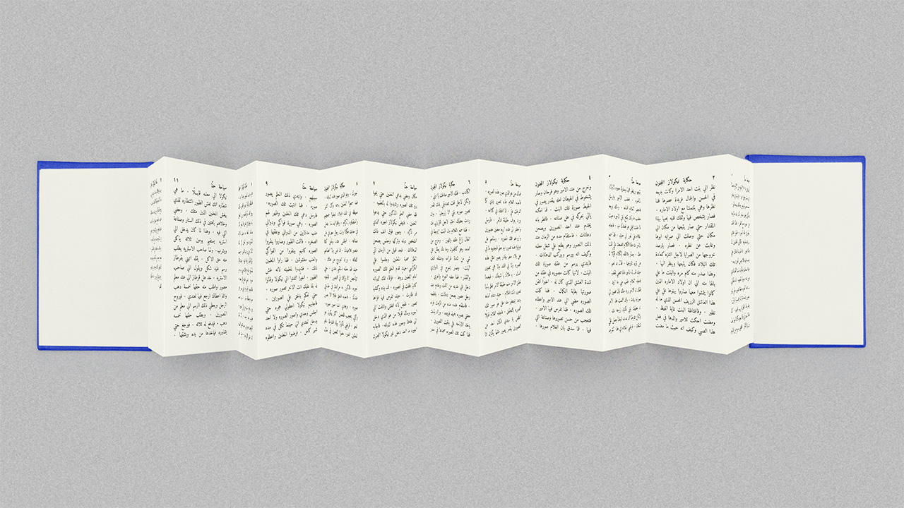
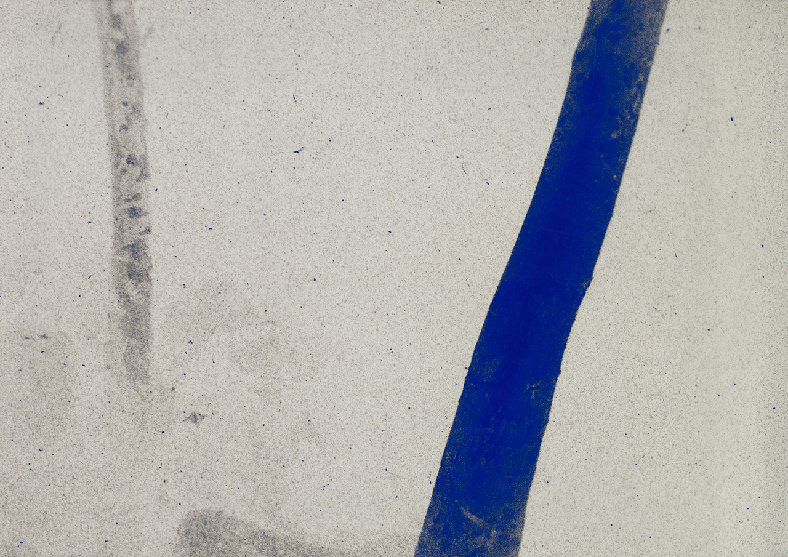
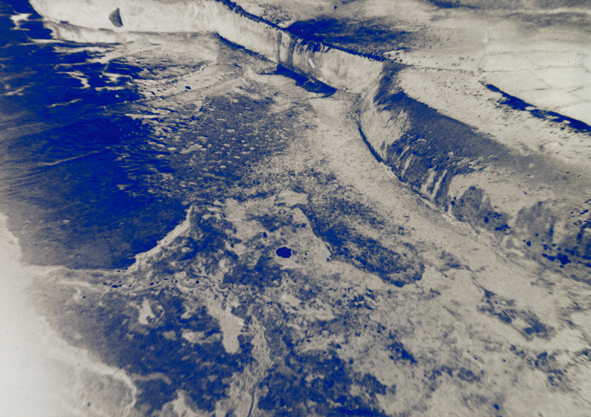
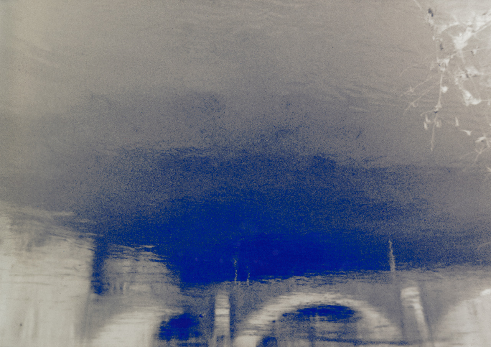

Ce projet est une recherche artistique autour d’un manuscrit arabe datant du XVIIIe siècle, actuellement conservé par la Bibliothèque apostolique vaticane. Il s’agit d’un questionnement sur le rapport de l’humain au voyage et à l'exil, à travers l’intersection des archives diasporiques et des traditions narratives. Prenant comme point de départ le récit écrit par Hanna Diyab où il raconte son voyage d’Alep à Paris, entre 1707 et 1710, ce projet lève le voile sur les réseaux historiques de mobilité et d’échanges à travers la mer Méditerranée. Surtout, cette exploration réexamine les liens entre le voyage et les traditions de contes orales et écrites, en questionnant les origines de l’histoire d’Aladdin ou la Lampe Merveilleuse, traduite pour la première fois en français pendant le séjour de Hanna à Paris en 1709.
Antoun Youssef Hanna Diyab est un homme né en circa 1688 à Alep, une ville qui à l’époque faisait partie de la Syrie ottomane. Il a grandi dans une famille qui a pratiqué les rites de l’Église maronite, et pour cela en tant que jeune homme, il a décidé de devenir moine dans un monastère situé dans une des vallées du Mont Liban. Il y est resté pour quelques semaines, avant d’abandonner ce projet et d’aller vers la ville côtière de Tripoli en 1707. Arrivé à Tripoli, il rencontrait Paul Lucas, un antiquaire pour Louis XIV, et il accepte de lui accompagner dans son expédition pour le roi de France autour de la Méditerranée pendant les deux prochaines années.
En février 2023, j’ai passé un court séjour entre Rome et la Cité du Vatican afin que je puisse consulter le manuscrit de Hanna en entier. Pendant cette résidence, j’ai produit une série de photographies argentiques que j’ai choisi d’imprimer en tonalité négative, après les avoir numériquement colorisé avec une couche de bleu marin.
Vue de l'installation dans la Galerie des Ursulines à Tourcoing.
L'Histoire de Nicolas Le Fou, version arabe.
Vue détaillée d'un des tirages numérisés.
Vue détaillée d'un des tirages numérisés.
Vue détaillée d'un des tirages numérisés.